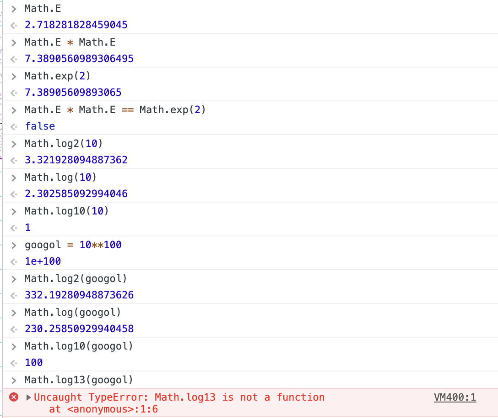
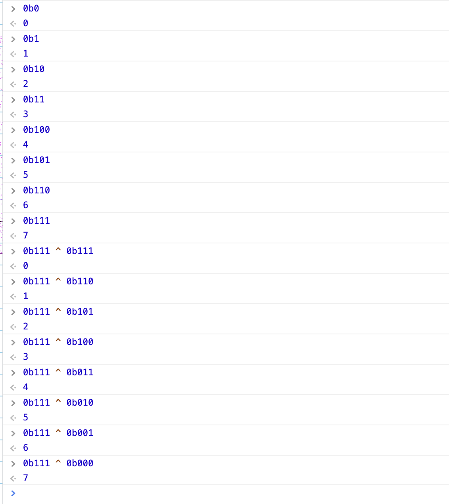
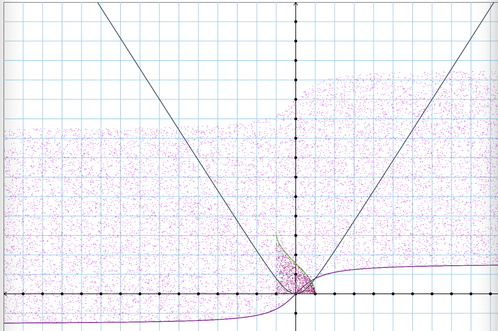

Homework due June 25 — do 6 of these 10
1. Guess the function — see the attached graph. Hint: try your guesses on your own graph so that they match up.
purple function
brown function
green function
X
2. Individual work:
a. Cris: show a screenshot of that weird function you showed in class on Sunday June 20. The one that had Math.random in it, and the graph was mostly above the x-axis but had just a couple points below it. It had a few bumps in the third quadrant, then in the first quadrant it looked like it went up to positive infinity at three different places. Please include the definition of the function in your screenshot.
b. Alex: Give a code snippet from your Unity game and write an explanation of it.
c. Kenneth: Prove the two difficult cases from the compare function; why does Cris beat Alex with probability = 2/3 and why does Alex beat Kenneth with probability = 2/3?
4 4 4 4 0 0 — Kenneth
3 3 3 3 3 — Kai
2 2 2 2 6 6 — Cris
1 1 1 5 5 5 — Alex
This controls the player object.
using System.Collections;
using System.Collections.Generic;
using UnityEngine;
public class PlayerController : MonoBehaviour {
public float speed = 1000; // let's set a decent speed as default
private Rigidbody rb;
public Vector3 jump;
public float jumpForce = 2.0f;
public bool isGrounded;
void Start() // Upper case because in C# casing counts!
{
rb = GetComponent< Rigidbody >();
jump = new Vector3(0.0f, 2.0f, 0.0f);
}
void FixedUpdate()
{
float moveHorizontal = Input.GetAxis("Horizontal");
float moveVertical = Input.GetAxis("Vertical");
// Let's assign both x and z
Vector3 movement = new Vector3(moveHorizontal, 0.0f, moveVertical);
GetComponent< Rigidbody >().AddForce(movement*speed);
}
void Update(){
if(Input.GetKeyDown(KeyCode.Space) && isGrounded){
rb.AddForce(jump * jumpForce, ForceMode.Impulse);
isGrounded = false;
}
}
}
3. Goldbach’s conjecture is one of the oldest and best-known unsolved problems in number theory and all of mathematics. It states that every even whole number greater than 2 is the sum of two prime numbers.
a. Prove it up to 10. Easy:
4 = 2 + 2
6 = 3 + 3
8 = 3 + 5
10 = 3 + 7
b. continue the above proof by hand up through the number 30.
c. Let’s suppose you wanted to prove this for even numbers up through 1000 … or up through n? Think about an algorithm that could accomplish this (hint, your algorithm could in turn rely on sieve). Write down a sentence or two describing how that algorithm would work.
X
Let’s write a function called randomLife. Start with your graph function in order to draw some graph paper, but omit the x-axis and the y-axis. Also, we won’t be putting functions on there. Instead, we will be looking at the squares of your graph, and we will refer to them as “cells”. We are calling this function randomLife because you will fill the cells with color black when they are alive; and when you draw your grid, look at each cell, calculate Math.random(), and if it’s less than 1/3, mark that cell as alive. That’s it. So every time you reload the page it should have a different random setup with approximately 1/3 of the cells alive.
X
Write solve(mathString). This function will read mathString and solve it. For now, you can make a very strong simplifying assumption: mathString will always be of the form "x + y" where x and y are positive integers. Examples: "17 + 23", "29999 + 314159". Also, let’s assume that x and y are both less than Math.MAX_SAFE_INTEGER / 2 so that we don’t have to worry about BigInt. In short, mathString will always be: number, space, plus, space, number. Then perform that computation and return the result.
X
6. Easy console.log work. Write a sentence describing observations.
Math.E
Math.E * Math.E
Math.exp(2)
Math.E * Math.E == Math.exp(2)
Math.log2(10)
Math.log(10)
Math.log10(10)
googol = 10**100
Math.log2(googol)
Math.log(googol)
Math.log10(googol)
Math.log13(googol) 
Math.log13(googol) should be around 90, because 10^100 is googol, so 13^100 is slightly more.

7. More console work. Explain what’s going on here. What’s the b and what’s the ^.
0b0
0b1
0b10
0b11
0b100
0b101
0b110
0b111
0b111 ^ 0b111
0b111 ^ 0b110
0b111 ^ 0b101
0b111 ^ 0b100
0b111 ^ 0b011
0b111 ^ 0b010
0b111 ^ 0b001
0b111 ^ 0b000
b is binary. ^ subtracts binary code

8. What is destructuring in JavaScript? Read sections 10.1, 10.2, 10.3 of this: https://exploringjs.com/es6/ch_destructuring.html Write a paragraph describing destructuring in your own words. Give 3 or more examples preferably from your own code, or, suggest how we could use destructuring to simplify the rock-paper-scissors code we spoke about on Friday June 18 (see the thread here, it’s in a snippet).
Destructuring is used to take things out of arrays and objects. For example,
const arr = ['a', 'b'];
for (const [index, element] of arr.entries()) {
console.log(index, element);
}
Would give, 0, a, 1, b
9. Write five crazy cool math functions and put them all on the same graph.
const func4 = (x) => 2/x+3;
const func2 = (x) => x**x**x*x+x/2;
const func3 = (x) => 2/2+3/x+2/x+3/4;
const func5 = (x) => Math.atan();
const func6 = (x) => Math.random()*Math.random()+2;

10. Prepare five easy/medium math functions to graph for our Google Meet version of guess-the-function.
Done, but if I showed them here it would spoil the fun.